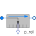

RelativePressureIdeal relative pressure sensor |

|
Information
This information is part of the Modelica Standard Library maintained by the Modelica Association.
The relative pressure "port_a.p - port_b.p" is determined between the two ports of this component and is provided as output signal. The sensor should be connected in parallel with other equipment, no flow through the sensor is allowed.
Connectors (3)
| port_a |
Type: FluidPort_a |
|
|---|---|---|
| port_b |
Type: FluidPort_b |
|
| p_rel |
Type: RealOutput Description: Relative pressure signal |
Used in Examples (1)
|
Modelica.Fluid.Examples
Model of a pumping system for drinking water |